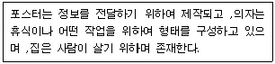
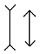
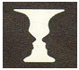
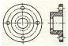
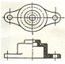
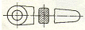
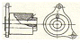
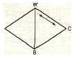
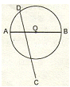

컴퓨터그래픽스운용기능사 (2008-10-05 기출문제)
1과목: 산업디자인 일반
1. 광고의 표지, 제목, 타이틀 등을 무엇이라고 하는가?
- 타이포그래피
- 보더라인
- 바디카피
- 헤드라인
(정답률: 91%)

2. 빛과 운동을 이용한 조형기법과 관련이 적은 것은?
- 데포르메
- 포토그램
- 레이오그램
- 오브제모빌
(정답률: 53%)
3. 다음 중 프로덕트 디자인 영역이 아닌 것은?
- 악세사리 디자인
- 퍼니쳐 디자인
- 엔지니어링 디자인
- 패키지 디자인
(정답률: 59%)
4. 1970년대의 그래픽 디자인에 가장 큰 영향을 준 양식으로, 그래픽 디자인에 유행했던 에어브러시 기법이 비롯된 양식은?
- 미니멀리즘
- 구성주의
- 표현주의
- 극사실주의
(정답률: 56%)
5. 다음 중 황금 비율은?
- 1 : 1.618
- 1 : 2.618
- 1 : 3.618
- 1 : 2.5
(정답률: 93%)
6. 제품화하기까지의 일관된 연쇄 작업과 부품의 호환성 방법을 결합 하여 대량생산방식을 개발한 사람은?
- 에디슨
- 헨리포드
- 크라이슬러
- 쿠텐베르크
(정답률: 70%)
7. 전통적 주거 공간의 실내 계획시 고려 사항으로 방위와 실의 연결이 가장 적절한 것은?
- 동 - 침실 , 보일러실
- 서 - 부엌 , 저장실
- 남 - 식당 , 아동실
- 북 - 탈의실 세면실
(정답률: 61%)
8. 표적시장의 선정과 대체적 마케팅전략에서 차별화 마케팅전략의 목적은?
- 경쟁우위 장악
- 시장입지 획득
- 제품 시장 영역확인
- 동질적인 욕구와 선호 충족
(정답률: 50%)
9. 디자인 문제해결 과정 중 필요성을 제시하고 명시하는 단계는?
- 계획
- 분석
- 종합
- 평가
(정답률: 60%)
10. 실제의 기능이 작동되는 기능모델로서 사용실험에 이용되는 모델은?
- 워킹 모델(working model)
- 더미 모델(dummy model)
- 러프 모델(rough model)
- 스케치 모델(sketch model)
(정답률: 68%)
11. 신제품 개발 과정 중 제품 개발에 대한 설명으로 옳은 것은?
- 완전한 제품원형을 만드는 데는 오랜 시간이 소요되지 않는다.
- 원형품의 개발 및 시험, 유표화(branding), 패키징 등의 세 단계를 거친다.
- 원형품을 설계할 때는 물리적 특성에 대한 소비자들의 반응을 후 자에 놓고 추진한다.
- 완성된 제품은 기는 테스트와 소비자 테스트를 생략한다.
(정답률: 74%)
12. 디자인 요소에 대한 설명으로 틀린 것은?
- 디자인의 내용적 요소에는 디자인 하는 대상의 목적, 용도, 기능, 의미 등이 있다.
- 디자인의 형식적 요소에는 형태 , 색 , 질감 등이 있다.
- 시각적 구성요소로서 디자인의 핵심을 이루는 것은 내용적요소이다.
- 디자인 원리들은 요소들의 조직에 관한 기본적인 지침이며 요소들을 서로 연결시키는 방법이다.
(정답률: 67%)
13. 다음 설명에 해당하는 디자인의 조건은?

- 심미성
- 합목적성
- 독창성
- 경제성
(정답률: 92%)
14. 환경 분야에서 디스플레이 개념이 적용되는데 그 분야 중 공적 분야에 속한다고 볼 수 없는 것은?
- 박람회
- 페스티벌
- 쇼윈도우
- 정원
(정답률: 69%)
15. 기업의 디자인 정책과 이미지를 효과적으로 표현하기 위해 실시하는 기업의 이미지 정책은?
- CM
- CIP
- CF
- DM
(정답률: 79%)
16. 인테리어 디자인에서 내부생활 공간을 구성하는 요소와 가장 거리가 먼 것은?
- 인
- 익스테리어 공간
- 쉘터의 스킨과 에워싸인 공간
- 장치
(정답률: 57%)
17. 생활에 필요한 도구를 만드는 디자인은?
- 복식디자인
- 제품디자인
- 환경디자인
- 시각디자인
(정답률: 90%)
18. 사전에 계획된 예상 고객에게 직접 전달할 수 있으므로 소구 대상을 정확하게 선정하여 직접 발송할 수 있는 장점을 가진 광고는?
- 직접 우송 광고(DM)
- 구매 시점 광고(POP)
- 신문 광고
- 잡지 광고
(정답률: 85%)
19. 영화에 대한 설명으로 틀린 것은?
- 트레일러(Trailer)란 영화의 예고편을 말하며 영화를 보게끔 만드는 홍보 영상물이라 할 수 있다.
- 티져(Teaser)란 영화의 줄거리를 소개하거나 전반적인 흐름을 보여 주는 것이다.
- 영화 메인타이틀은 제목을 말하며 간단한 애니메이션만으로도 관객에게 강한 인상을 남기는 부분이다.
- 오프닝 무비는 영화가 시작하기 전 타이틀과 함께 나오는 부분을 말한다.
(정답률: 60%)
20. 다음 그림에 해당하는 착시는?

- 기하학적 착시
- 다양한 의미 도형의 착시
- 밝기의 착시
- 불가능한 도형의 착시
(정답률: 83%)
2과목: 색채 및 도법
21. 다음 그림은 검정배경에 흰 잔이 있어 보이지만 , 2개의 어두운 옆 얼굴이 서로 마주 보는 것처럼 보인다. 이 현상 대한 설명으로 틀린 것은?

- 이와 같은 착시를 격자 착시라고 한다.
- 이와 같은 도형을 반전도형 또는 도지 반전 도형이라 한다.
- 텔레비전 화면을 보고 있으면 화면에 투사한 인물이 사라진 뒤에도 그 검은 상이 보이는 것과 같은 현상이다
- 천장의 전등을 바라본 후 다른 곳을 보면 전등의 형태가 보이다가사라져 보이는 것과 같은 현상이다.
(정답률: 62%)
22. 계절과 색 감정을 연결해놓은 것으로 틀린 것은?
- 겨울 - 하늘은 희끄무레한 회색이 감도는 색조
- 가을 - 산과 들은 크롬 옐로
- 여름 - 나무의 색은 노란색이나 갈색
- 봄 - 화초는 연한자색 또는 벚꽃색
(정답률: 86%)
23. 높은 빌딩이나 탁자를 임의의 거리를 두고 내려다 본 것 같이 표현 하는 투시도법은?
- 1 소점 투시도
- 2 소점 투시도
- 3 소점 투시도
- 4 소점 투시도
(정답률: 70%)
24. 육면체의 1개 모서리가 화면과 평행하고, 다른 2방향의 모서리가 각각 화면에 경사져 2개의 소점을 가지는 투시도는?
- 평행투시도
- 사각투시도
- 유각투시도
- 특수투시도
(정답률: 64%)
25. 다음 그림 중 회전 단면도는?




(정답률: 62%)
26. 물체의 기본적인 모양을 가장 잘 나타낼 수 있도록 물체의 중심에서 반으로 절단하여 도시한 것은?
- 온단면도
- 한쪽 단면도
- 부분 단면도
- 회전 단면도
(정답률: 63%)
27. 동시대비에 관한 설명으로 틀린 것은?
- 색의 3속성 차이에 의한 변화가 일어나는 것이다.
- 자극과 자극 사이가 멀수록 대비현상은 약해진다.
- 시점을 한곳에 집중시키려는 지각과정에서 일어나는 현상이다.
- 일정한 자극이 사라진 후에도 지속적으로 자극을 느끼는 현상이다
(정답률: 64%)
28. 투시도상에서 광선 자체는 몇 개의 소점을 갖게 되는가?
- 1개
- 2개
- 3개
- 4개
(정답률: 63%)
29. 컴퍼스를 이용한 원 그리기 방법으로 다음 중 정원이 될 수 없는 것은?
- 임의의 3점을 통하는 원 그리기
- 정 삼각형에 내접하는 원 그리기
- 정 사각형에 내접하는 원 그리기
- 장축과 단축을 이용한 원 그리기
(정답률: 61%)
30. 빨강(R)과 녹색(G)의 색광을 서로 비슷한 밝기로 혼합하면 어떤 색광 이 되는가?
- 노랑
- 청록
- 흰색
- 파랑
(정답률: 74%)
31. 인간의 눈으로 볼 수 있는 가시광선의 파장범위는?
- 50~100nm
- 380~780nm
- 800~900nm
- 1000~1500nm
(정답률: 89%)
32. 중간혼합에 대한 설명으로 틀린 것은?
- 혼합된 색의 색상은 두 색의 중간이 된다.
- 혼합된 색의 채도는 혼합 전 채도가 강한 쪽보다는 약해진다.
- 보색관계의 혼합은 중간명도의 회색이 된다.
- 혼합된 색의 명도는 혼합 전 색의 명도보다 높아진다.
(정답률: 60%)
33. 어두운 상태에서 우리 눈의 간상체가 지각할 수 있는 것은?
- 황색
- 회색
- 청색
- 적색
(정답률: 72%)
34. 다음 오스트발트 색입체에서 화살표가 나타내는 계열은?

- 등백색계열
- 등순색계열
- 등흑색계열
- 등색상계열
(정답률: 54%)
35. 색의 지각적인 효과에 대한 설명으로 틀린 것은?
- 명도가 높은색은 팽창해 보이고, 낮은색은 수축하여 보인다.
- 전진색과 팽창색은 공통된 성질을 가지며 주로 난색계이다.
- 후퇴색과 수축색은 공통된 성질을 가지며 주로 한색계이다.
- 전진색은 수축하여 보이고 후퇴색은 팽창하여 보인다.
(정답률: 77%)
36. 아래 그림은 원에 내접하는 정n각형을 작도하는 방법의 일부를 나타낸 것이다. 다음 설명 중 옳은 것은?

- 원의 반지름 AO를 n등분한다.
- AB = OC 이다.
- 교정D는 C와 n등분의 제3의 분점을 맺는 원주와의 교점이다.
- AD로 원주를 잘라 차례로 맺으면 정n각형을 얻는다.
(정답률: 51%)
37. 쉐브럴(chevreul)이 주장한 색채조화론과 거리가 먼 것은?
- 인접색의 조화
- 반대색의 조화
- 주조색의 조화
- 채도의 조화
(정답률: 54%)
38. 사진 암실의 빨강 안전광 아래에서는 흰색이나 노랑, 빨강이 잘 구별되지 않고, 빨강 잉크는 무색의 물처럼 보이는 현상은?
- 명암순응
- 색순응
- 항상성
- 빛의 강도
(정답률: 70%)
39. 도면 제도시 주의사항으로 잘못된 것은?
- 의사를 정확하게 전달할 수 있게 제도한다.
- 제도 규약에 맞추어 작도한다.
- 선은 용도에 관계없이 일정한 굵기로 작도한다.
- 명료하면서 조화롭고, 간결하게 작도한다.
(정답률: 86%)
40. 색채조화에 대한 연구 학자가 아닌 사람은?
- 레오나르드다빈치
- 뉴턴
- 오스트발트
- 렌쯔
(정답률: 71%)
3과목: 디자인 재료
41. 다음 중 목재에 관한 설명으로 옳은 것은?
- 한 춘재부에서 추재부를 거쳐 다음 춘재부에 이르는 하나의 띠를 나이테라고 한다.
- 나이테의 추재부가 밀접하게 배열된 목재는 무르고 연하다.
- 일반적으로 나이테가 명료한 것은 대부분 활엽수이다.
- 일반적으로 옅은색의 목재는 짙은색의 목재보다 내구력이 크다.
(정답률: 64%)
42. 종이에 내수성을 주고, 잉크의 번짐을 방지하지 위하여 종이의 표면 또는 섬유를 아교물질로써 피복시키는 종이가공 공정은?
- 고해
- 충전
- 사이징
- 정정
(정답률: 73%)
43. 구리와 아연의 합금이며 일명 놋쇠라고 하는 것은?
- 오스뮴
- 청동
- 양은
- 황동
(정답률: 66%)
44. 주성분이 우루시올이며 용재가 적게 들고 광택이 우아하여 공예품이 주로 사용되는 천연 수지 도료는?
- 라커
- 옻
- 에폭시 수지 도료
- 에멀션 도료
(정답률: 74%)
45. 비결성의 탄화수소계 물질로서, 그 주원소가 비금속인 탄소로 이루어진 재료는?
- 유리
- 섬유강화플라스틱
- 알루미늄
- 피혁
(정답률: 59%)
46. 다자인 표현 재료 중 연필이 대한 설명으로 틀린 것은?
- 가장 무르고 검은 것을 보통 8B로 본다.
- 가장 단단한 것을 10H로 본다.
- 보통 스케치 단계에서는 2H~HB 정도를 쓴다.
- 본을 뜨는 경우 보통은 4B를 쓴다.
(정답률: 58%)
47. 종이를 서로 붙여서 두꺼운 판자를 만드는 가공방법은?
- 도피가공
- 흡수가공
- 변성가공
- 배접가공
(정답률: 75%)
48. 목재의 물리적 성질에 대한 설명으로 옳은 것은?(오류 신고가 접수된 문제입니다. 반드시 정답과 해설을 확인하시기 바랍니다.)
- 인장강도 - 목재에 압력을 가할 때의 내부 저항력
- 압축강도 - 마멸에 대한 내부 저항력
- 경도 - 목재를 잡아끄는 외력에 대한 내부 저항력
- 전단강도 - 목재의 일부를 남은 부분위에 올려놓았을 때, 이 단면에 평행하게 작용하는 저항력
(정답률: 55%)
4과목: 컴퓨터 그래픽스
49. 3차원 모델링 방식중 산이나 구름 같은 자연대상물의 불규칙적인성질을 갖는 움직임을 표현할 경우 사용하며 자연의 무질서 현상을 연구대상으로 하는 개념에 기초하고 있는 모델링은?
- 와이어프레임 모델링
- 프랙탈 모델링
- 솔리드 모델링
- 파라메트릭 모델링
(정답률: 67%)
50. 포토샵 이미지를 일러스트레이터의 프로그램으로 불러올 때의 작업 요소와 관련이 없는 것은?
- 포토샵에서 Eps파일 포맷으로 저장한다.
- 포토샵에서 레스터 이미징을 한다.
- 일러스트레이터에서 가져오기 명령으로 불러온다.
- 포토샵 원본데이터도 함께 저장한다.
(정답률: 51%)
51. 컴퓨터 그래픽의 역사 중 1970년대의 내용과 가장 거리가 먼 것은?
- 미국의 벨연구소에서 직접 회로개발에 성공 하였다.
- 컴퓨터를 이용한 시뮬레이션이 처음으로 도입 되었다.
- 면 처리의 실험적인 작품인 하프톤 애니메이션이 제작되었다.
- 영화 ‘스타워즈’ 의 출현으로 컴퓨터그래픽스의 활용을 한층 더 높였다.
(정답률: 47%)
52. 벡터방식 그래픽에 대한 설명으로 가장 거리가 먼 것은?
- 일러스트레이터(Illustrator) 응용프로그램 등에서 사용하는 방식이다.
- 이미지를 수학적으로 기술된 선으로 표현한다.
- 그래픽 작업에서 해상도를 고려할 필요 없다.
- 픽셀이라는 작은 사각형의 격자를 사용하여 이미지를 만드는 방식이다.
(정답률: 62%)
53. LPI(Line Per Inch)를 가장 잘 설명한 것은?
- 출력시 이미지가 출력 되는 시간
- 출력시 이미지의 해상도
- 출력시 선의 두께
- 출력시 선을 선명하고 겹쳐지지 않게 하는 것
(정답률: 55%)
54. 이미지 공간 렌더링 기법의 하나로 깊이 정보는 버퍼에 저장되며 감춰진 면 제거 계산이 일어나는 렌더링 과정에 사용되는데 이러한 은선 제거의 대표적인 기법은?
- 레이트레이싱
- 레디오시티
- Z-버퍼 알고리즘
- 와이어 프레임
(정답률: 57%)
55. 모니터상의 이미지컬러와 인쇄물과의 색상이 서로 다른 이유를 가장 잘 설명한 것은?
- 인쇄물을 RGB 컬러로 인쇄하지 않았기 때문이다.
- 모니터의 색상영역(Color Gamut) 이 프린터 색상영역 보다 크기 때문이다.
- RGB이미지가 CMYK 로 변환되지 않았기 때문이다.
- 출력시 필터를 사용 하지 않았기 때문이다.
(정답률: 56%)
56. 이미지를 빛의 반사를 통해 컴퓨터가 인식하는 숫자로 전환하는 역할을 입력하는 장치는?
- 마우스
- 스캐너
- 터치스크린
- 키보드
(정답률: 77%)
57. 이미지 데이터사이즈(용량)를 변화시키는 방법과 가장 거리가 먼 것은?
- Mode의 전환
- 선택(select)영역
- 해상도(resolution)조정
- 이미지의 가로 , 세로 크기조정
(정답률: 64%)
58. Illustrator 작업에서 문자를 creat outline(윤곽선 만들기)변환하는 이유가 아닌 것은?
- 사용서체가 없는 컴퓨터에서 출력할 때도 서체가 깨어지지 않기 때문이다.
- 글자나 단어의 각각 기준점과 곡선을 그래픽적으로 변화를 주거나 변형시킬 수 있기 때문이다.
- 글자를 마스크용 오브젝트로 만들 수 있기 때문이다.
- 해상도가 좋아지고 용량이 줄어들기 때문이다.
(정답률: 74%)
59. 인간과 컴퓨터 간에 일어나는 상호작용성에 초점을 맞추어 디자인 하는 것은?
- 산업디자인
- 인터랙티브디자인
- 아이덴티티디자인
- 컴퓨터응용디자인
(정답률: 56%)
60. 다음 중 주기억 장치의 설명으로 옳은 것은?
- CPU에서 지금 필요하지는 않지만 언젠가는 필요한 정보들을 저장하는 장치이다.
- 외장하드, 플로피디스크, Jazz/ZIP 드라이브, CD-ROM등이 있다.
- CPU에서 연산할 명령 ,데이터, 그 결과를 저장하는 곳으로 RAM, ROM이 있다.
- 입력장치와 중앙처리장치에서 행한 행동을 사람이 눈으로 확인할 수 있도록 하는 장치이다.
(정답률: 69%)